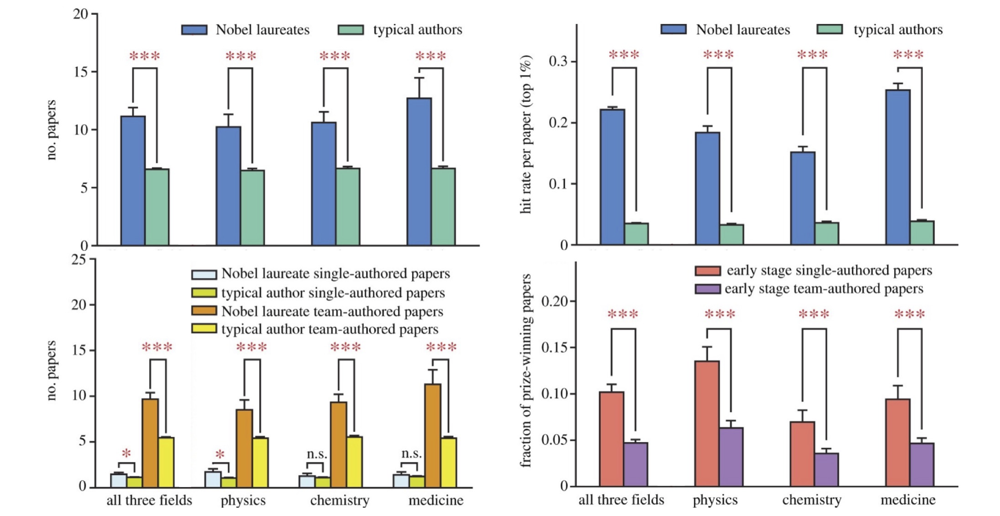

Publications
Google Scholar Page
Microsoft Academic Page
Journal Publications
Scientific elite revisited: patterns of productivity, collaboration, authorship and impact
Jichao Li, Yian Yin, Santo Fortunato and Dashun Wang
Journal of the Royal Society Interface, 17(165): 20200135, Apr 2020.
[DOI]
|  | Throughout history, a relatively small number of individuals have made a profound and lasting impact on science and society. Despite long-standing, multi-disciplinary interests in understanding careers of elite scientists, there have been limited attempts for a quantitative, career-level analysis. Here, we leverage a comprehensive dataset we assembled, allowing us to trace the entire career histories of nearly all Nobel laureates in physics, chemistry, and physiology or medicine over the past century. We find that, although Nobel laureates were energetic producers from the outset, producing works that garner unusually high impact, their careers before winning the prize follow relatively similar patterns to those of ordinary scientists, being characterized by hot streaks and increasing reliance on collaborations. We also uncovered notable variations along their careers, often associated with the Nobel Prize, including shifting coauthorship structure in the prize-winning work, and a significant but temporary dip in the impact of work they produce after winning the Nobel Prize. Together, these results document quantitative patterns governing the careers of scientific elites, offering an empirical basis for a deeper understanding of the hallmarks of exceptional careers in science. |
Quantifying the dynamics of failure across science, startups, and security
Yian Yin, Yang Wang, James A. Evans and Dashun Wang
Nature, 575(7781): 190-194, Oct 2019.
[DOI] [Project page]
Media coverage: MIT Technology Review, Inc., Scientific American, Science Daily, Phys.org, Harvard Business Review, Fast company, Fast company, The Lancent, The Washington Post, Forbes
 |
Human achievements are often preceded by repeated attempts that fail, but little is known about the mechanisms that govern the dynamics of failure. Here, building on previous research relating to innovation, human dynamics and learning, we develop a simple one-parameter model that mimics how successful future attempts build on past efforts. Solving this model analytically suggests that a phase transition separates the dynamics of failure into regions of progression or stagnation and predicts that, near the critical threshold, agents who share similar characteristics and learning strategies may experience fundamentally different outcomes following failures. Above the critical point, agents exploit incremental refinements to systematically advance towards success, whereas below it, they explore disjoint opportunities without a pattern of improvement. The model makes several empirically testable predictions, demonstrating that those who eventually succeed and those who do not may initially appear similar, but can be characterized by fundamentally distinct failure dynamics in terms of the efficiency and quality associated with each subsequent attempt. We collected large-scale data from three disparate domains and traced repeated attempts by investigators to obtain National Institutes of Health (NIH) grants to fund their research, innovators to successfully exit their startup ventures, and terrorist organizations to claim casualties in violent attacks. We find broadly consistent empirical support across all three domains, which systematically verifies each prediction of our model. Together, our findings unveil identifiable yet previously unknown early signals that enable us to identify failure dynamics that will lead ultimately to success or failure. Given the ubiquitous nature of failure and the paucity of quantitative approaches to understand it, these results represent an initial step towards the deeper understanding of the complex dynamics underlying failure. |
Nobel laureates are almost the same as us
Jichao Li, Yian Yin, Santo Fortunato and Dashun Wang
Nature Reviews Physics, Apr 2019.
[DOI]
 |
Quantitative studies of Nobel laureates’ careers have predominantly focused on the prize-winning work alone. To test if there are indeed systematic differences between the careers of Nobel laureates and ordinary scientists, we studied a unique dataset of entire career histories for nearly all Nobel laureates in physics, chemistry and physiology or medicine from 1900 to 2016 (545 out of 590 laureates, 92.4%). By testing the burst of most-cited papers and dynamics of team sizes, we find after removing the prize-winning papers, the career of Nobel laureates and ordinary scientists follow the same patterns. Together, iur analysis show that apart from their prize-winning work, the careers of Nobel laureates follow the same patterns as those of the majority of scientists. |
 |
A central question in the science of science concerns how to develop a quantitative understanding of the evolution and impact of individual careers. Over the course of history, a relatively small fraction of individuals have made disproportionate, profound, and lasting impacts on science and society. Despite a long-standing interest in the careers of scientific elites across diverse disciplines, it remains difficult to collect large-scale career histories that could serve as training sets for systematic empirical and theoretical studies. Here, by combining unstructured data collected from CVs, university websites, and Wikipedia, together with the publication and citation database from Microsoft Academic Graph (MAG), we reconstructed publication histories of nearly all Nobel prize winners from the past century, through both manual curation and algorithmic disambiguation procedures. Data validation shows that the collected dataset presents among the most comprehensive collection of publication records for Nobel laureates currently available. As our quantitative understanding of science deepens, this dataset is expected to have increasing value. It will not only allow us to quantitatively probe novel patterns of productivity, collaboration, and impact governing successful scientific careers, it may also help us unearth the fundamental principles underlying creativity and the genesis of scientific breakthroughs. |
The time dimension of science: Connecting the past to the future
Yian Yin and Dashun Wang
Journal of Informetrics, 11(2): 608–621, May 2017.
[DOI] [arXiv] [Supplementary Information]
 |
A central question in science of science concerns how time affects citations. Despite the long-standing interests and its broad impact, we lack systematic answers to this simple yet fundamental question. By reviewing and classifying prior studies for the past 50 years, we find a significant lack of consensus in the literature, primarily due to the coexistence of retrospective and prospective approaches to measuring citation age distributions. These two approaches have been pursued in parallel, lacking any known connections between the two. Here we developed a new theoretical framework that not only allows us to connect the two approaches through precise mathematical relationships, it also helps us reconcile the interplay between temporal decay of citations and the growth of science, helping us uncover new functional forms characterizing citation age distributions. We find retrospective distribution follows a lognormal distribution with exponential cutoff, while prospective distribution is governed by the interplay between a lognormal distribution and the growth in the number of references. Most interestingly, the two approaches can be connected once rescaled by the growth of publications and citations. We further validate our framework using both large-scale citation datasets and analytical models capturing citation dynamics. Together this paper presents a comprehensive analysis of the time dimension of science, representing a new empirical and theoretical basis for all future studies in this area. |